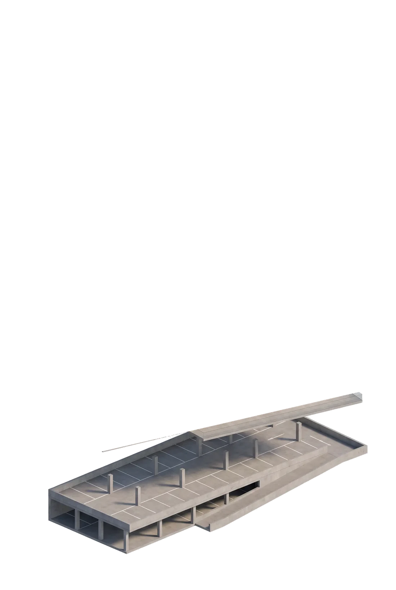
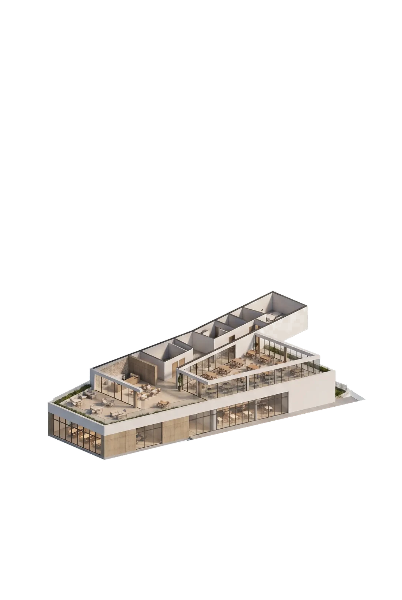
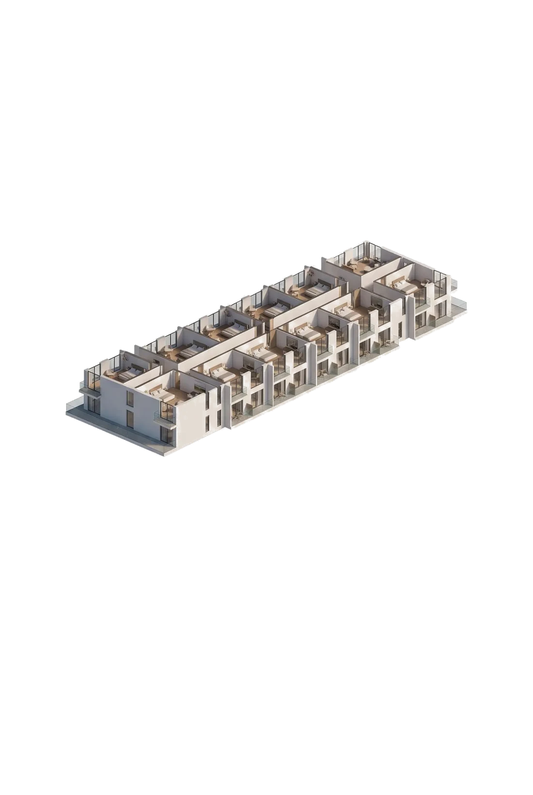
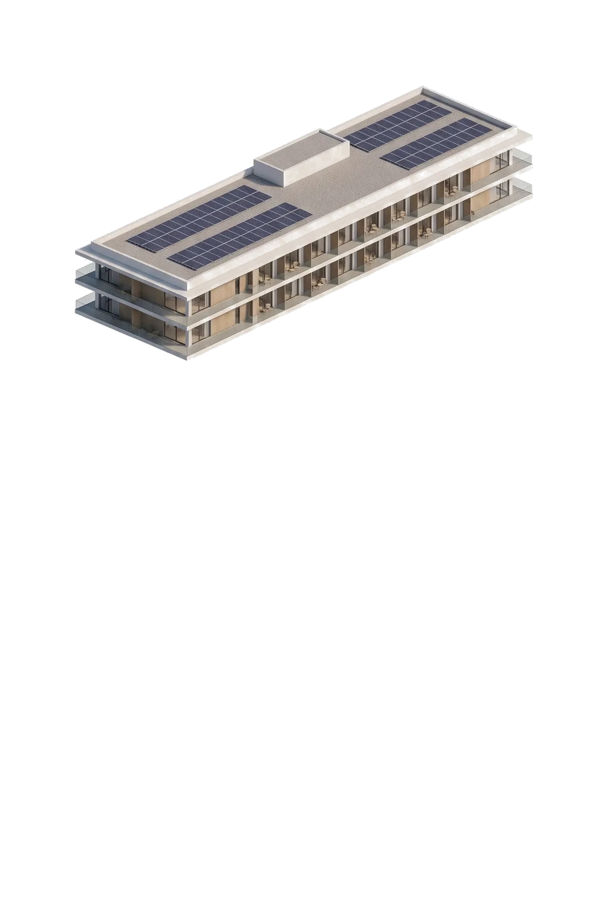

01
U-ResortCentralizado
Hotel a sul, duas linhas de cinco casas voltadas para dentro, piscina ao centro.
Até 7.000 m² de implantação, em três pisos acima do solo — fachada até 12 m, subsolo sem limite de pisos.
A classificação está a mudar de Equipamento para Serviços e Turismo. Índice alargado e tipologia mista em avaliação junto da Câmara de Montemor-o-Novo.
O que custa levantar o hotel, e o que rende cada noite.
Reunião com a Arq. Ana Bela, chefe de divisão do Departamento de Urbanismo, esclareceu o estado da classificação do terreno e do Plano Diretor Municipal (PDM).
Não permite construção de hotel — Equipamento destina-se a usos como piscinas públicas, campos desportivos ou parques.
A Câmara Municipal de Montemor-o-Novo já incluiu esta reclassificação no novo PDM, precisamente para permitir a construção do hotel.
A conclusão estava prevista para o ano anterior; a mudança de executivo atrasou a publicação da versão final. Nenhum projeto pode ser aprovado enquanto isso não acontecer — mas alterações a cotas, índices e classificações podem ser pedidas nesta fase.
A remoção dos postes de betão de média tensão e dos postes de madeira de telecomunicações fica a nosso cargo, e pode ser solicitada assim que houver um projeto aprovado.
Começa pelo edifício completo e roda a roda do rato para o abrir camada a camada, de cima para baixo — da cobertura fotovoltaica até ao estacionamento em cave. Clica num piso para ver o que tem lá dentro.




CLICA NUM PISO PARA VER O QUE TEM LÁ DENTRO
Render ilustrativo, para estudo volumétrico — não constitui projeto de arquitetura aprovado.
O regulamento não limita só a área — limita a forma. Três pisos dentro de 12 m de fachada, subsolo sem limite, e duas coisas fora da contagem: a explanada no topo e as piscinas. Cada modelo usa esse envelope de maneira diferente.
O envelope — 3 pisos, 12 m de fachada, subsolo livre — é o do regulamento em vigor e está confirmado. Os pé-direitos de cada piso e a distribuição de programa são uma proposta minha — pé-direito maior onde há programa público, 3,2 m nos pisos de quartos — e estão por confirmar com o arquiteto. Nenhum dos cinco esgota os 12 m; o Modelo 3 fica-se pelos dois pisos.
O índice em vigor permite 40% de implantação. Está pedido o alargamento até 60% com tipologia mista — hotel mais casas de apoio. O primeiro está confirmado; o segundo, em avaliação.
Com 3 pisos, os 40% dão 21.000 m² de área bruta. Fachada até 12 m · explanada no topo · subsolo sem limite de pisos · piscinas fora da contagem.
Cinco maneiras de acomodar hotel e casas de apoio nos 17.500 m², caso o índice alargado e a tipologia mista sejam aceites. Abre um modelo para ver o detalhe.
Hotel a sul, duas linhas de cinco casas voltadas para dentro, piscina ao centro.
Hotel em linha a norte, piscina de borda infinita com cascata, casas em banda curva a sul.
Quatro edifícios baixos pelo pomar, piscina-lagoa com ilha, casas em três núcleos.
Um só edifício a poente, dez casas geminadas a nascente, corredor verde a separar.
Pavilhão de eventos e restaurante a sul sobre o relvado; hotel e casas a norte, no silêncio.
Estudo ilustrativo, sujeito à aprovação do índice alargado e da tipologia mista, e a projeto de licenciamento.
Um Plano Diretor Municipal fixa-se por anos. Enquanto está em revisão, é possível pedir alterações a índices, cotas e classificação — depois de publicado, deixa de ser. É esta janela que estamos a usar.
O novo hospital em construção em Évora traz consigo procura de alojamento que a região ainda não tem — profissionais, famílias e estadias prolongadas. Montemor-o-Novo fica a cerca de 30 km, no eixo para Lisboa. É o argumento que sustenta o pedido de tipologia mista.
Urbanismo e Turismo já manifestaram apoio para dar prioridade ao processo, e a reclassificação para Serviços e Turismo foi incluída no novo PDM precisamente para permitir o hotel.
Junto ao Gabinete de Ordenamento do Território, com a Vereadora do Turismo Paula Martins — já reunidos, com abertura demonstrada.
Autorização para hotel com casas de apoio, respondendo também à procura de alojamento gerada pelo novo hospital de Évora.
Em paralelo, com um arquiteto — para que, assim que a Câmara aprove índice e tipologia, o projeto esteja também pronto do nosso lado.
Urbanismo e Turismo já manifestaram apoio para dar prioridade ao projeto assim que estiver tudo pronto, por ser de interesse municipal.